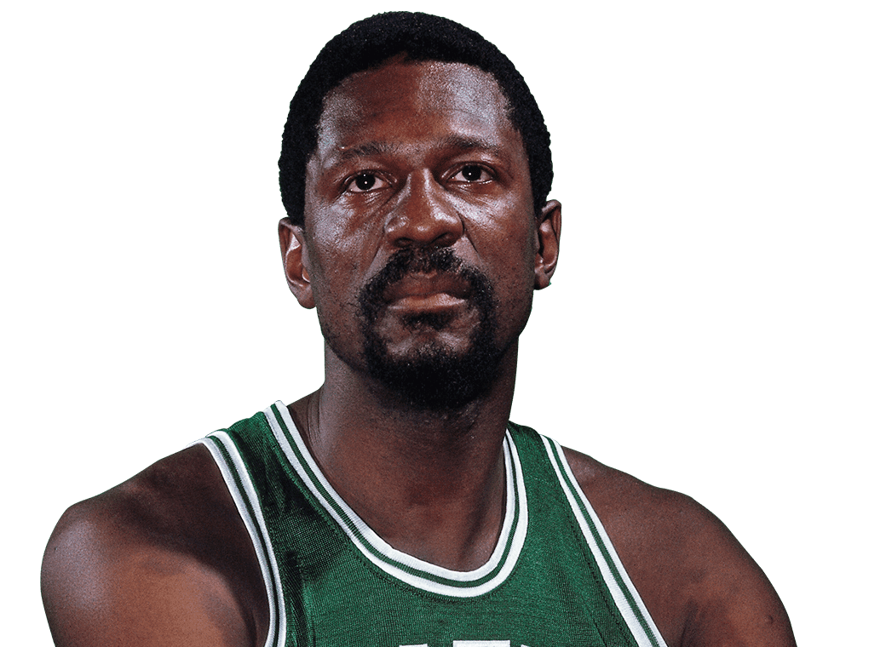
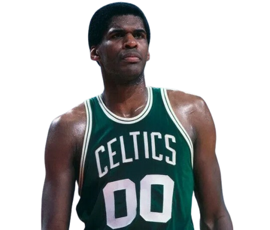
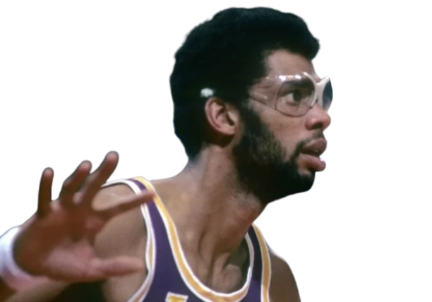
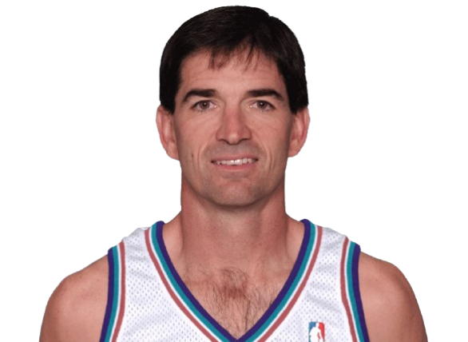
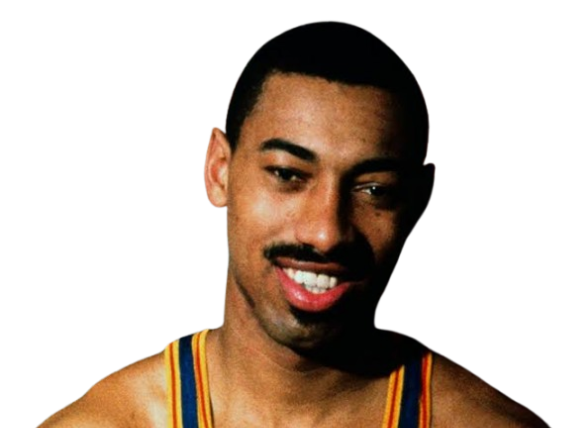
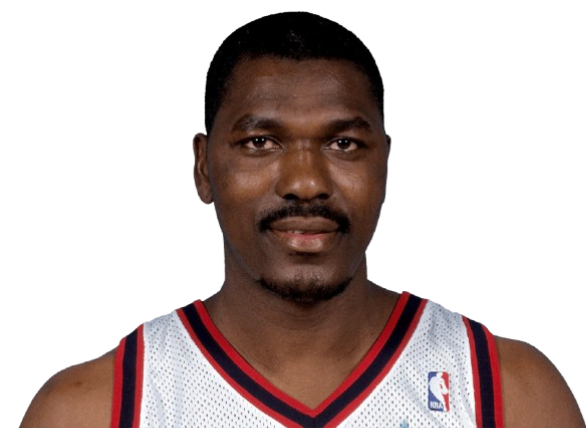
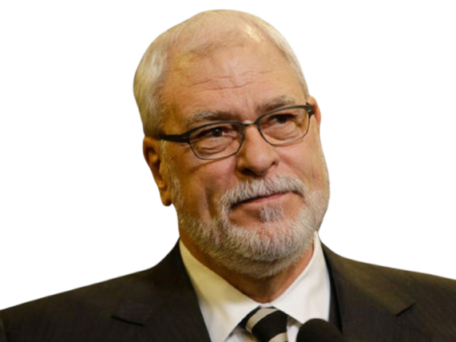

Seja Bem-Vindo ao site da NBA! 🏀
A NBA é uma das ligas mais populares e influentes do mundo, com uma base de fãs global superior a 2,4 bilhões de pessoas, espalhados por regiões como Europa, Ásia, África e América do Norte. Com ícones como Michael Jordan, Kobe Bryant, LeBron James e Stephen Curry, a liga não é apenas um evento esportivo, mas um fenômeno cultural, impactando a moda, a publicidade e a mídia. A NBA também tem um forte engajamento digital, com mais de 50 milhões de seguidores nas principais redes sociais e milhões de visitantes mensais em seu site oficial, NBA.com. A liga investe na expansão internacional com eventos como os "NBA Global Games" e "NBA China Games", além de exibir jogos em diversos países. Financeiramente, a NBA é uma das ligas mais lucrativas do planeta, com o valor médio das franquias ultrapassando 3 bilhões de dólares e gerando bilhões em receitas anuais por meio de direitos de transmissão, patrocínios e vendas de ingressos. Considerada a liga de basquete de mais alto nível, sua temporada regular vai de outubro a abril, culminando nos emocionantes playoffs e na disputa pelo título. A NBA também se destaca pela inovação, utilizando tecnologias como análise de dados, realidade virtual e transmissões ao vivo por streaming, o que a mantém na vanguarda do entretenimento esportivo global.
Regras
Durante a temporada regular da NBA, as equipes competem contra times da sua própria conferência, assim como contra times da conferência oposta. As franquias acumulam vitórias e derrotas, o que determina a classificação para os playoffs. As equipes que se destacam durante essa fase avançam para a fase final da temporada, os playoffs, onde as franquias mais bem classificadas de cada conferência se enfrentam em séries eliminatórias até que um time de cada conferência se torne campeão da Conferência Leste e da Conferência Oeste. Esses dois campeões então disputam as Finais da NBA para determinar o grande vencedor da liga.
Em relação às regras principais da NBA, o jogo é dividido em quatro quartos de 12 minutos cada, com intervalos curtos de 2 minutos entre o primeiro e o segundo, e o terceiro e o quarto. O intervalo principal, entre o segundo e o terceiro quarto, dura 15 minutos. Se o jogo terminar empatado após os 48 minutos de tempo regulamentar, uma prorrogação de 5 minutos é jogada até que haja um vencedor. Quanto à pontuação, um arremesso feito dentro da linha de 3 pontos vale 2 pontos, enquanto um arremesso de trás da linha de 3 pontos vale 3 pontos. Além disso, um lance livre vale 1 ponto e é concedido após faltas cometidas durante o jogo.
As faltas são um aspecto importante do jogo. A falta pessoal ocorre quando um jogador entra em contato ilegal com o adversário, enquanto a falta técnica é aplicada por comportamentos antidesportivos ou infrações relacionadas ao treinador ou à equipe. A falta antidesportiva é uma infração mais grave, cometida de forma intencional ou excessiva, e pode resultar em penalidades adicionais. Se um jogador acumular 6 faltas pessoais, ele é desqualificado do jogo, o que é conhecido como "falta por eliminação".
Quanto à posse de bola, o time tem 24 segundos para tentar um arremesso, ou a posse é transferida para o time adversário. Caso o time não consiga atravessar a linha do meio-campo em 8 segundos, ou não faça um arremesso dentro de 24 segundos, é considerada uma violação, e a posse é transferida. Além disso, os jogadores devem driblar a bola enquanto se movem, e qualquer violação de "andada", ou seja, dar mais de dois passos sem driblar, resulta em perda de posse. Se um jogador for derrubado enquanto tenta um arremesso, ele recebe lances livres, dependendo de onde o arremesso foi tentado.
As equipes podem fazer substituições durante o jogo, sem limite de número, mas um jogador substituído não pode retornar até que uma parada no jogo ocorra. Os técnicos têm um número limitado de tempos mortos que podem ser solicitados durante a partida, o que permite que eles ajustem estratégias e instruam os jogadores.
Cada time tem cinco jogadores em quadra, distribuídos nas posições de armador, ala, ala-pivô e pivô. Além disso, a NBA também é famosa por suas intensas rivalidades, como a histórica entre Los Angeles Lakers (Oeste) e Boston Celtics (Leste). O torneio dos playoffs é fundamental para definir os campeões de cada conferência, que depois disputam as Finais da NBA, coroando o vencedor da temporada.
Times
As franquias da NBA são as equipes que compõem a liga de basquete profissional dos Estados Unidos. Cada franquia é uma organização independente, que possui direitos para competir na NBA, e sua administração pode ser realizada por um proprietário ou um grupo de investidores. As franquias são distribuídas entre duas conferências: a Conferência Leste e a Conferência Oeste
Arena:
Fundação:
Localização:
Conferência:
Divisão:
Títulos da NBA:
Títulos de Conferência:
Mascote:
Site oficial: Visitar
Jogadores
Os jogadores da NBA são os atletas profissionais que competem na liga de basquete profissional dos Estados Unidos. Os jogadores da NBA são conhecidos por sua habilidade, talento e dedicação ao esporte, e são considerados os melhores jogadores de basquete do mundo. Os jogadores da NBA são contratados pelas franquias da liga, e são responsáveis por representar suas equipes em competições nacionais e internacionais. Os jogadores da NBA são reconhecidos por sua habilidade técnica, física e mental, e são admirados por fãs de todo o mundo.
Clique na foto abaixo para ver a batalha pelo posto de GOAT do basquete.
Estatísticas
As estatísticas da NBA são os registros de todas as informações coletadas durante os jogos da liga de basquete profissional dos Estados Unidos. As estatísticas são utilizadas para avaliar o desempenho dos jogadores e das equipes, e são fundamentais para a análise e o planejamento tático dos treinadores. As estatísticas da NBA são coletadas e registradas por uma equipe de estatísticos, que acompanham todos os jogos da liga e registram as informações relevantes em tempo real.
| Jogador | Feito |
|---|---|
 |
Maior cestinha da temporada regular (mais de 39.500) |
| Lebron James | |
|  | Mais títulos na carreira (11) |
| Bill Russell | |
|  | Mais jogos disputados na carreira (1.611) |
| Robert Parish | |
 |
Mais triplo-duplos (182) |
| Russel Westbrook | |
 |
Mais chutes de 3 acertados na carreira (mais de 3.500) |
| Stephen Curry | |
|  | Mais vezes MVP (6) |
| Kareem Abdul-Jabbar | |
|  | Mais assistências na carreira (15.806) |
| John Stockton | |
|  | Maior pontuador em um único jogo (100) |
| Wilt Chamberlain | |
|  | Mais tocos na carreira (3.830) |
| Hakeem Olajuwon | |
 |
Mais chutes de 3 acertados em um único jogo de temporada regular (14) |
| Klay Thompson | |
 |
Mais pontos em um mesmo jogo de playoffs (63) |
| Michael Jordan | |
|  | Técnico com mais títulos (11) |
| Phil Jackson |